SwimWays ad
A SwimWays commercial for Big Machine, Burbank. The image was Ken Carlson's, the studio's creative director; Steve Petersen is the name on the slate. Mr. Pinoux supervised the visual effects on set, then built them with KABatcha and cut the spot. A backyard pool in Los Angeles, one day in April.
Une publicité SwimWays pour Big Machine, Burbank. L'image, c'est Ken Carlson, directeur de création du studio ; Steve Petersen est le nom porté sur le clap. Mr. Pinoux a supervisé les effets visuels sur le plateau, puis les a fabriqués avec KABatcha et monté le film. Une piscine de jardin à Los Angeles, une journée d'avril.
A private backyard somewhere in Los Angeles, dressed as a pool party: bunting strung across the deck, paper pompoms, orange trees heavy over the fence, and inflatables everywhere. Video village went up under a blue pop-up on the far side of the water. One day of shooting, 4 April 2017, from midday until the light went.
Un jardin privé quelque part à Los Angeles, habillé en pool party : des guirlandes de fanions tendues au-dessus de la terrasse, des pompons en papier, des orangers chargés par-dessus la clôture, et des bouées partout. Le village vidéo est monté sous une tente bleue, de l'autre côté de l'eau. Une journée de tournage, le 4 avril 2017, de midi jusqu'à la tombée du jour.
The idea was a barbecue with the time taken out of it. Everything around the pool hangs where it is while one woman unfolds her float. The float opens so fast that it becomes the only thing in the frame still moving. Two shots carry the whole conceit, and the slate numbers them: 05, time freezes, and 11, time unfreezes.
L'idée : un barbecue dont on a retiré le temps. Tout ce qui entoure la piscine reste suspendu pendant qu'une femme déplie sa bouée. La bouée s'ouvre si vite qu'elle devient la seule chose du cadre qui bouge encore. Deux plans portent toute l'idée, et la feuille les numérote : 05, le temps se fige, et 11, le temps repart.
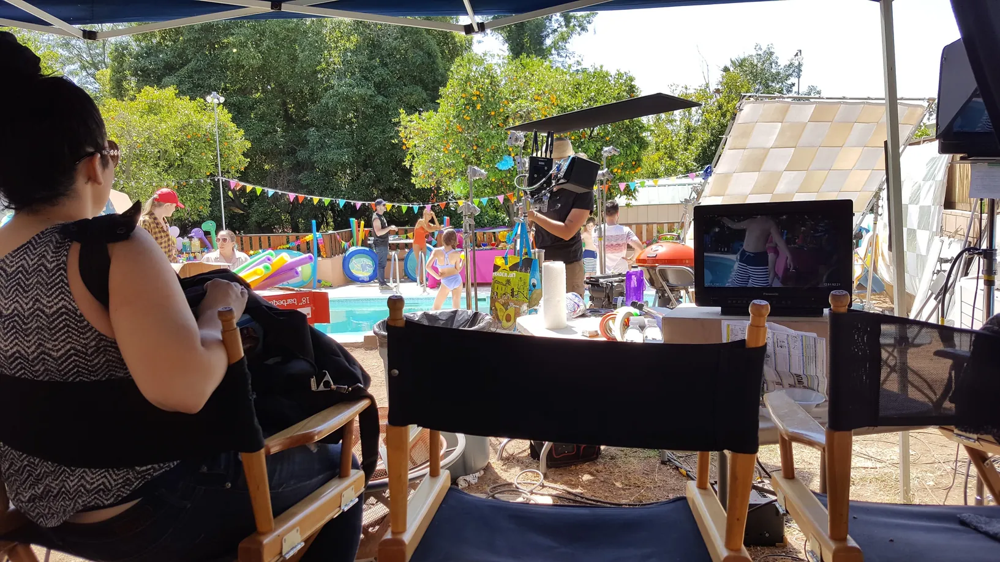
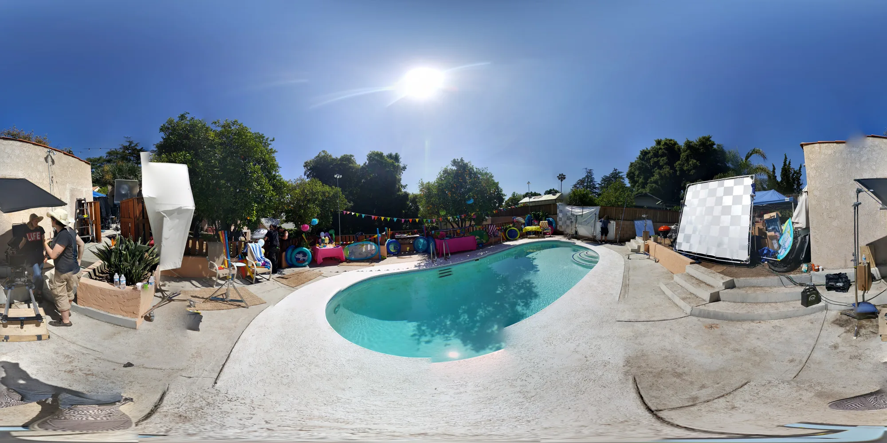
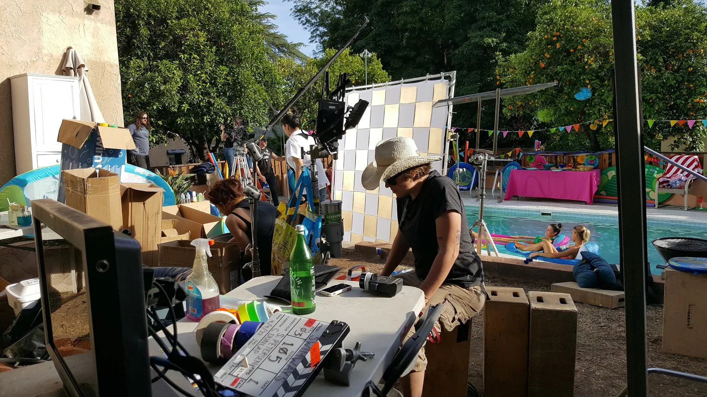
Freezing a moment means rebuilding it, so the set had to exist in three dimensions before anyone could stop the water in it. That is what the supervising day is: a 360° panorama of the whole yard for the lighting, and a tape measure held against the cinder-block wall for the scale. Photographs of a real place, turned into a place that can be relit.
Figer un instant suppose de le reconstruire, donc le décor devait exister en trois dimensions avant qu'on puisse en arrêter l'eau. C'est ça, une journée de supervision : un panorama à 360° de tout le jardin pour l'éclairage, et un mètre ruban tendu contre le mur en parpaing pour l'échelle. Des photos d'un lieu réel, transformées en un lieu qu'on peut rallumer.
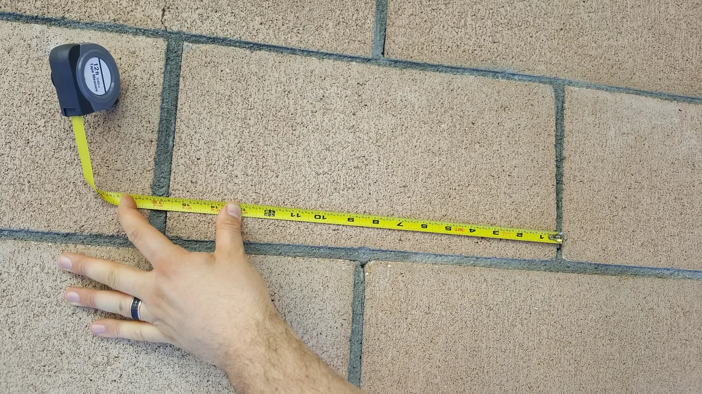
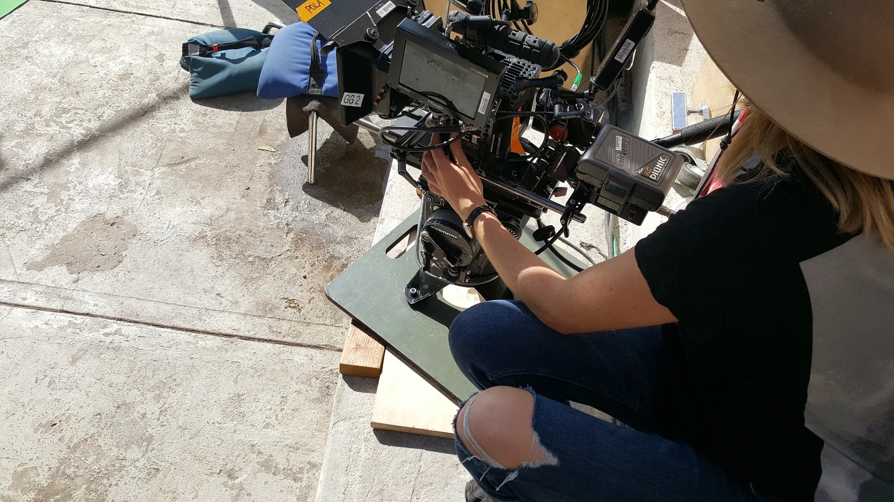
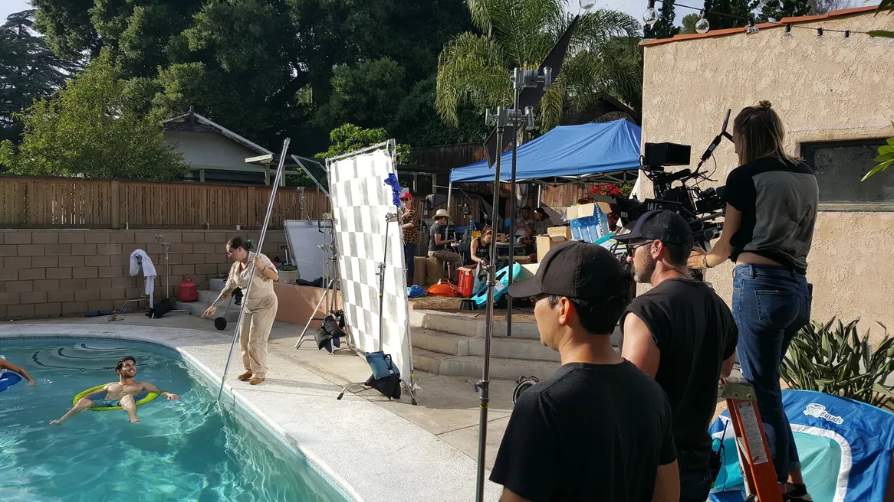
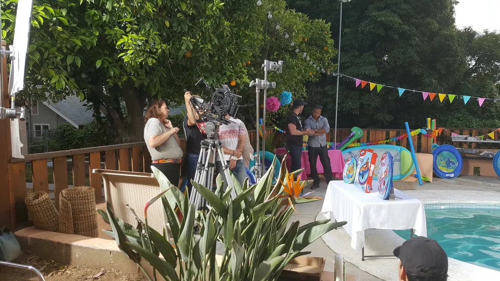
The shot list is blunt about it. A giant flame frozen coming off the grill, a burning burger patty stopped mid-flip, embers in the foreground. Clouds that stop moving the instant the float opens. A branch of leaves comped over the top of the wide. And for the product shot, every float rebuilt in 3D so the packaging could be read.
La feuille de plans est sans détour. Une flamme géante figée au-dessus du grill, une galette de burger en train de brûler arrêtée en plein vol, des braises au premier plan. Des nuages qui s'immobilisent à la seconde où la bouée s'ouvre. Une branche de feuilles incrustée en haut du plan large. Et pour le plan produit, chaque bouée reconstruite en 3D pour que l'emballage reste lisible.
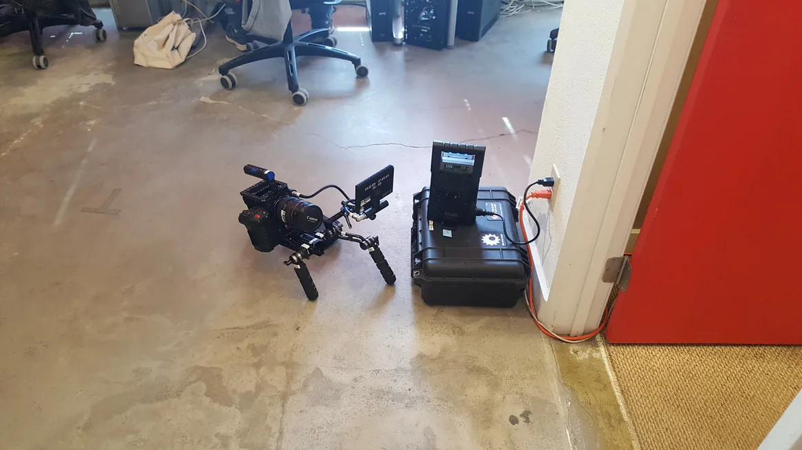
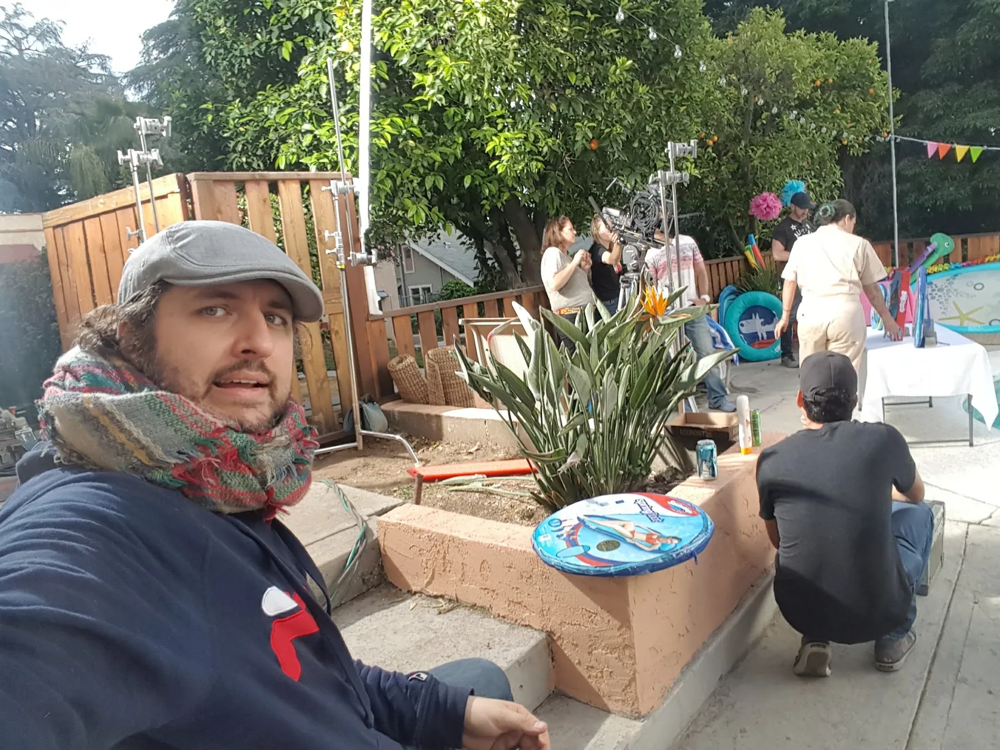
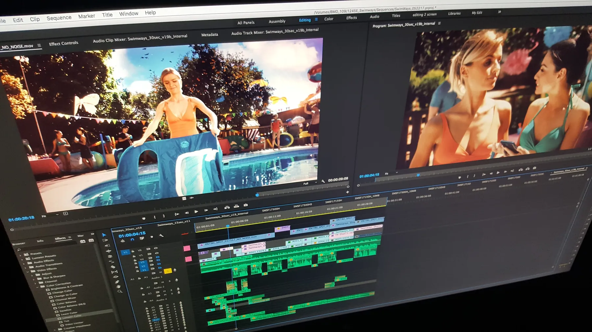
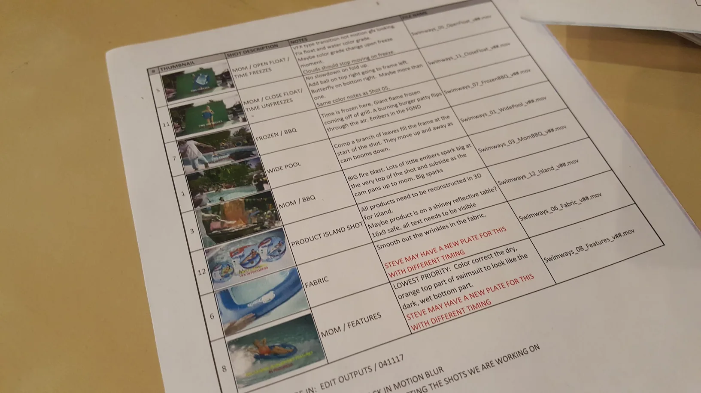
The effects were built back in Burbank with KABatcha, art director at the studio, and Mr. Pinoux cut the spot as well — a thirty-second version and a fifteen, which is the same film twice with different things left out. The timeline is from late May, a month and a half after the pool.
Les effets ont été fabriqués de retour à Burbank avec KABatcha, directeur artistique du studio, et Mr. Pinoux a aussi monté le film — une version de trente secondes et une de quinze, c'est-à-dire le même film deux fois avec des choses différentes en moins. La timeline date de fin mai, un mois et demi après la piscine.
Fine weather, a crew that got along, actors who were easy about it. The kind of shoot where everybody ends up talking to everybody. Not every job is like that, which is why it is worth writing down when one is.
Beau temps, une équipe qui s'entend, des acteurs faciles. Le genre de tournage où tout le monde finit par parler à tout le monde. Ce n'est pas le cas de tous les projets, et c'est bien pour ça que ça vaut la peine d'être noté quand ça l'est.